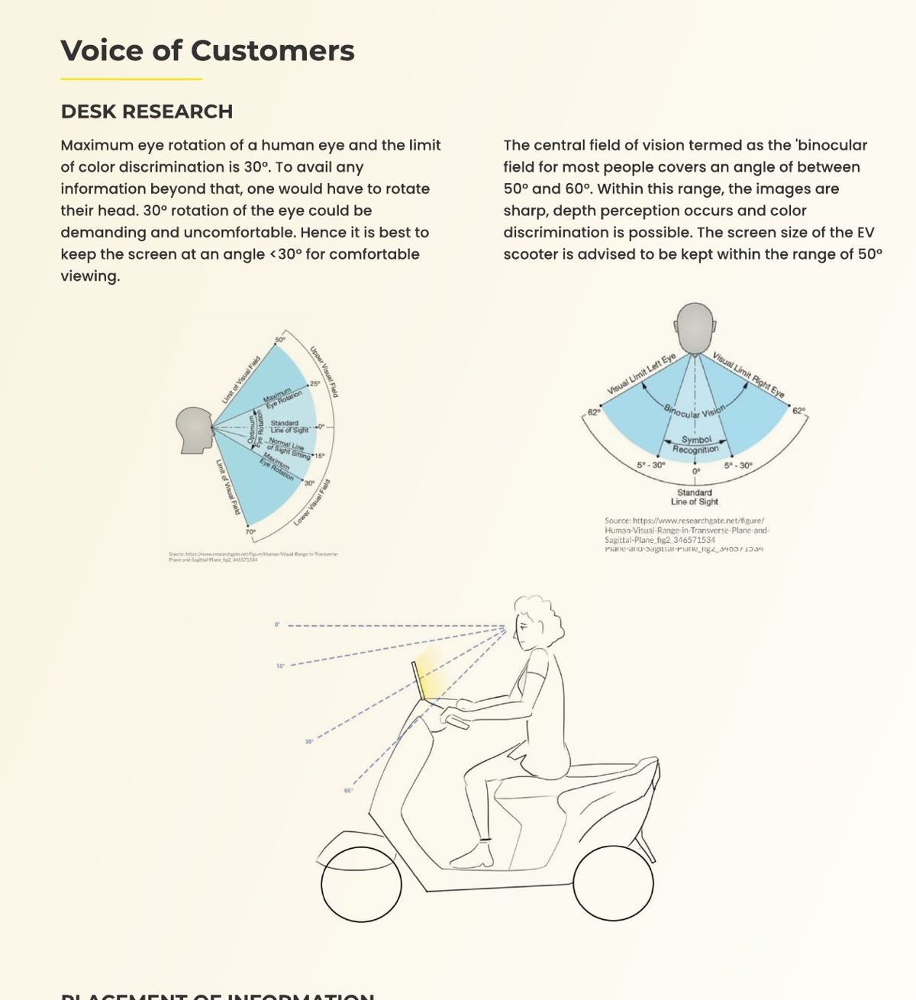
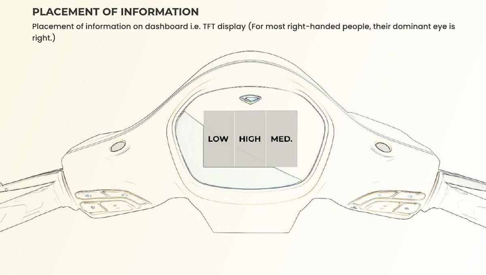
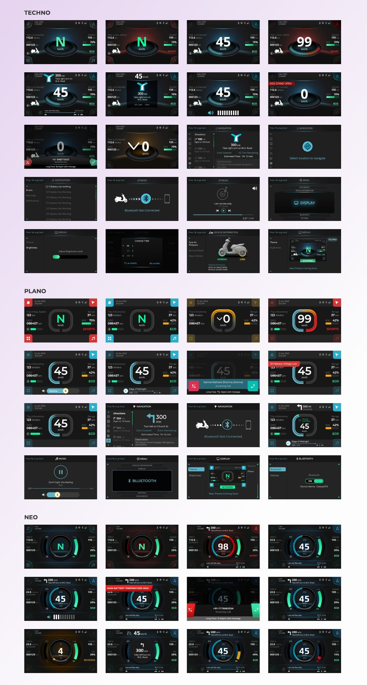
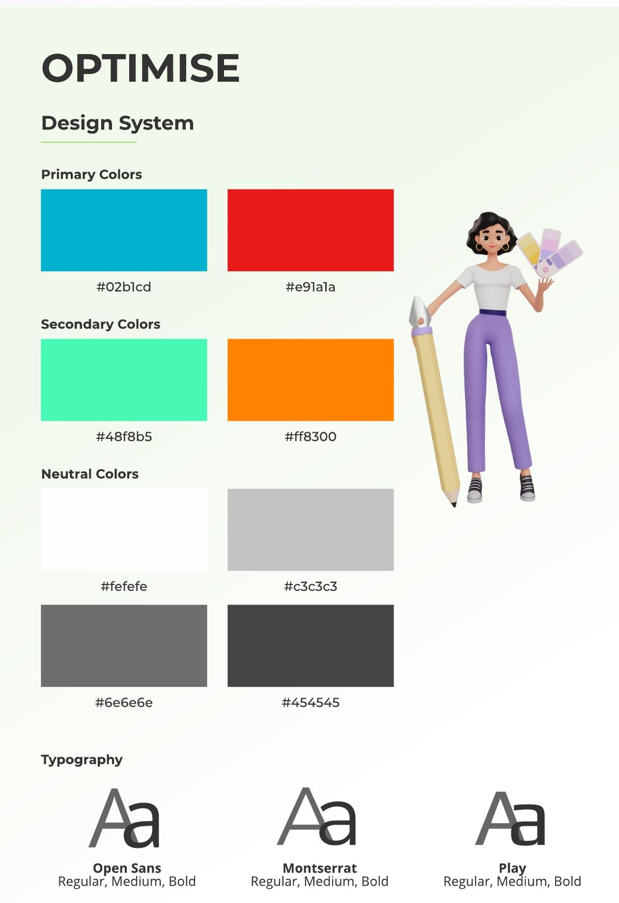

The short version
Chetak came back as an electric scooter with a modern-classic look. Its 5” display had to carry battery, range, navigation, music, calls, Bluetooth, settings and vehicle documents, and the only way to control it was physical buttons. Riders can’t look at a screen for long, so every extra item was a cost.
The team designed three visual themes for different buyers. The navigation and menus had to work the same way in all of them.
My part: I worked alongside another designer on the display. I wasn’t the lead. I designed the menu structure, meaning how settings, navigation, music, calls, notifications, vehicle information and documents are grouped and reached, and how navigation behaves while riding and while stationary.
What made it hard
- Riders can’t move their eyes far. Eye rotation beyond about 30° becomes uncomfortable, and sharp vision with colour happens only in a narrow central field.
- Physical buttons only, on a small 800 × 480 screen that has to hold a lot.
- Riding and stopping are different tasks. On the move, riders need directions and maybe music. Settings, documents and vehicle details only matter when they’re stopped.
- Three themes, one rider. Someone who switches theme shouldn’t have to relearn where anything is.
How my thinking changed along the way
Start from where the eye can go
The viewing-angle research set the first rule: speed, battery and warnings sit in the centre, and menus never cover them while riding. Most riders lead with their right eye, and for right-handed riders the dominant eye is usually the right one, so the highest-priority glance information sits right of centre.
Two menu states, chosen by whether the scooter is moving
The full menu opens only when the scooter is stopped. Settings, documents and vehicle information wait until then, and while riding only navigation and music have controls. Nothing on screen should invite a long look while moving. The cost is that riders can’t change settings on the move, and I accepted that.
Give navigation the centre
When a route is active, directions can take the centre of the screen, inside the rider’s comfortable field of view, with speed and battery still visible. Turn-by-turn is the one thing riders need to read often while moving. The trade-off is that secondary information gets less room during navigation.
One menu structure for all three themes
The menu grouping, order and button behaviour stay identical across Techno, Plano and Neo, and only the visual style changes. That meant every menu screen had to be checked in all three themes, which is more work, but a rider who switches theme finds everything where they left it.
What the research gave us
In desk research I read up on eye rotation and viewing angle, then mapped placement zones on the display for right-eye-dominant riders. These two boards are the reasoning behind the centre-field rule.


What riders see


What happened after launch
It shipped on Bajaj Chetak EV scooters, with the menu structure and navigation behaviour I designed. Bajaj shared no formal feedback, so I can’t point to numbers on how riders get on with it.
What didn’t go to plan
- I wasn’t the lead. I was finishing the Mera Bajaj app at the same time, so my part stayed limited to navigation and menus.
- No formal feedback came back from Bajaj, so what I know about the result is that it shipped.
- The decisions cost something. Riders can’t change settings on the move, secondary information gets less room during navigation, and every menu screen had to be checked in three themes.
What I’d do next
I wanted to be more involved in the display. My part was limited to navigation and menus, and even so it shipped on every Chetak EV with this display.